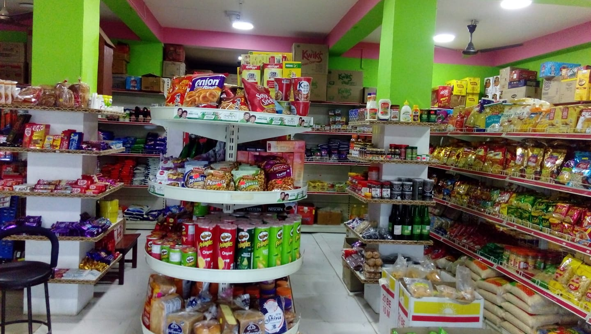

At our minimart, we provide a wide range of fresh products, everyday essentials, and household items all in one place. Form snacks, groceries, or personal care products, we have everything you need for day to day life. Our mission is to make shopping easy, affordable, and enjoyable. We focus on offering a variety of high-quality products at competitive prices, so you can find everything you need in your locality with easy access. We feel pride in our friendly staff, who are always ready to assist and make your shopping experience pleasant. We're not only a minimart but we're a part of the community, and we’re committed to serving you with easy reach of necessary things and dedication.

Objectives of our Mart:
To offer a shopping experience by providing a wide range of daily essentials, groceries, snacks and household products.
To offer quality, fresh and high-quality products, ensuring customers always have access to the best groceries and their daily life products.
To offer competitive pricing on all products, providing value for money while maintaining product quality to serve the needs of our customers.
To provide home delivery deliver services through well-trained, friendly, and knowledgeable staff creating positive shopping experience.
To ensure that the store is always clean, well-organized, and easy to access things, allowing customers to shop comfortably and efficiently.
To create a friendly shopping environment where customers can feel comfortable and valued during every visit.
Thank you for choosing BINAYAK MINIMART. We look forward to being shopping all your daily needs! If you have any doubts or quaries Contact Us or Visit our Store BINAYAK MINIMART today.